colMeans(datos[, 2:6]) A B C D E
0.4725037 0.4141729 0.3543294 0.2714232 0.2139568 Uno de los aspectos que me resulta más interesante respecto a los polémicos fondos de pensiones en Chile, es su funcionamiento y cómo se ven afectados por acontecimientos tanto internacionales, como los que ocurren en nuestra propia patria, y para eso, necesitamos saber qué son específicamente, los fondos que hay, y las AFP que existen.
Las administradoras de fondos de pensiones, o mejor conocidas como A.F.P, son instituciones financieras encargadas de administrar los fondos de cuentas individuales de ahorro para pensiones, entonces corresponden a un patrimonio constituido por todas la cotizaciones obligatorias y voluntarias que efectúan los trabajadores en su cuenta de capitalización individual, más depósitos voluntarios, y aportes adicionales, junto a las rentabilidades de sus respectivas inversiones, restando las comisiones que cobran la administradora.
Existen 5 alternativas de inversión, denominados fondos de pensiones tipo A, B, C, D y E, estos se diferencian en la proporción de los recursos financieros invertidos en renta variable y renta fija, en donde los primeros representan propiedad de una sociedad o empresa, tales como acciones, por ende tienen mayor riesgo y rentabilidad esperada, los segundos tienen una rentabilidad conocida que varía de acuerdo a su valor de mercado, y tienen menor riesgo y menos rentabilidad esperada.
De los 5 fondos antes mencionados, el fondo A tiene una mayor proporción invertida en renta variable, que disminuye a medida que nos acercamos a los fondos B, C, y D, y finalmente el fondo E, invierte principalmente en renta fija.
Actualmente las inversiones se rigen por los siguientes máximos y mínimos para instrumentos de renta variable:
Fondo A: Máximo = 80%, Mínimo obligatorio = 40%
Fondo B: Máximo = 60%, Mínimo obligatorio = 25%
Fondo C: Máximo = 40%, Mínimo obligatorio = 15%
Fondo D: Máximo = 20%, Mínimo obligatorio = 5%
Fondo E: Máximo = 5%, Mínimo obligatorio = 0%. [1]
Ahora conociendo el contexto de las AFP, y sus rasgos generales de inversión, podemos plantearnos las siguientes preguntas:
¿Cuál de las AFP presenta mejores resultados?.
¿Qué tanto afectó a las AFP la crisis subprime del 2008?.
¿Qué tan mal dejó a las AFP el terremoto del 2010?.
¿Cómo se vieron afectadas las rentabilidades de las AFP por el estallido social ocurrido en octubre de 2019?.
¿Cómo ha afectado la pandemia del 2020 a las rentabilidades de las AFP?, ¿Fue negativo el impacto?.
¿Qué fondos se ven menos afectados por los problemas nacionales?.
¿Qué fondos se ven menos afectados por problemáticas internacionales?.
Entonces además de observar el rendimiento de los distintos fondos y las distintas AFP, vamos a verlo en perspectiva histórica, para observar como se comporta su rentabilidad a lo largo de los años, haciendo énfasis en algunos años clave.
Desde la página de la superintendencia de pensiones, podemos encontrar una serie de tablas con las rentabilidades de los distintos tipos de fondos, y tipos de AFP, los cuales podemos seleccionar por mes y año, desde el año 2005 hasta hoy, para motivos de mi informe, desecharé el año 2005 ya que tiene demasiados valores faltantes.
Para poder comenzar, ya que la página no nos permite descargar ningún documento con los datos y además todas las selecciones cuentan con la misma url, usando “web-scraping”, obtendremos los datos de la primera y segunda columna de cada tabla, pues contienen el nombre de la AFP y su rentabilidad obtenida es mes y año respectivos, por ende haciendo uso de Python, y con ayuda de los paquetes (BeautifulSoup, Chromedriver, Selenium, Pandas, Time).
Debido a la gran cantidad de iteraciones que debe hacer el documento, no lo incluiré de manera funcional en el informe, el link se puede encontrar en el anexo.
Así ya disponemos de una base de datos que podemos importar, he sido cuidadoso a la hora de definir los tipos de cada variable, guardar los números en formato float, y variables categóricas como string, también reemplacé las comas por puntos, datos vacíos por 0.0 (float) y eliminé los símbolos %, por lo que no será necesario limpiar los datos.
A la hora de hacer el análisis, se filtrarán los datos según se requiera, y se eliminaran AFPs con pocas observaciones y se usarán fondos representativos de ser necesarios.
Analizamos la correlación entre los valores de los distintos fondos, y podemos ver que los fondos que menos se parecen respecto a rentabilidades, son el A y el E, pues tienen una correlación bajísima, lo cuál es lógico, ya que sus niveles de riesgo y sus objetivos son muy distintos, así, en base a estos dos fondos, haré la mayor parte del análisis ya que son los que representan el blanco y el negro en las AFP.
Ahora estamos en condiciones de zambullirnos y solucionar nuestras anécdotas:
De los dos fondos anteriormente mencionados, al tener niveles de riesgo muy distintos, el fondo A debería reportar muchas mas ganancias que el fondo E, el cual es más conservador, entonces los comparamos usando una AFP cualquiera:
colMeans(datos[, 2:6]) A B C D E
0.4725037 0.4141729 0.3543294 0.2714232 0.2139568 Descripción inicial de las variables en el archivo rentabilidad_afps:
| Variable | Tipo | Descripción |
|---|---|---|
| A.F.P. | Cadena de texto | Nombre de la AFP |
| A | Punto flotante | Rentabilidad Fondo A |
| B | Punto flotante | Rentabilidad Fondo B |
| C | Punto flotante | Rentabilidad Fondo c |
| D | Punto flotante | Rentabilidad Fondo D |
| E | Punto flotante | Rentabilidad Fondo E |
| Año | Entero | Año respectivo |
| Mes | Cadena de texto | Mes respectivo |
Para la primera revisión de los datos, usaremos particularmente las rentabilidades del Fondo A de AFP Capital, inicialmente nos interesa saber como se comportan sus momentos, y como ha progresado la rentabilidad a lo largo del tiempo, también queremos observar si la serie tiene rasgos estacionarios, y ver si estos se podrían extrapolar a las demás AFPS y fondos.
ggplot(retornos_capital_a, aes(x = t, y = A)) +
geom_line(color = "blue") +
ggtitle(fn("Retornos mensuales de AFP Capital Fondo A, período 2008-2021")) + xlab("Año") + ylab("Retornos")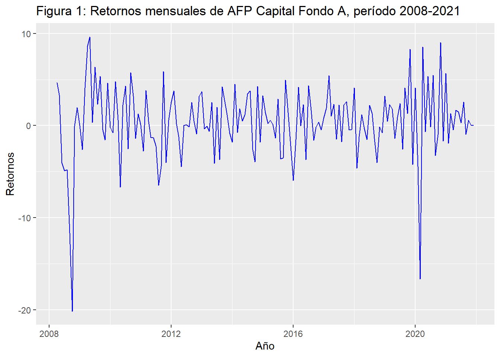
Como podemos observar en la Figura 1, las rentabilidades presentan una alta volatilidad, y parecieran tener una media bastante cercana a 0, también son notorias las caídas en los períodos 2008-2009 y 2020, que calzan con la crisis económica del 2008 y la pandemia COVID.
ggAcf(new_rets$A, lag.max = 20) +
ggtitle(fn("Autocorrelación de los retornos del Fondo A Capital"))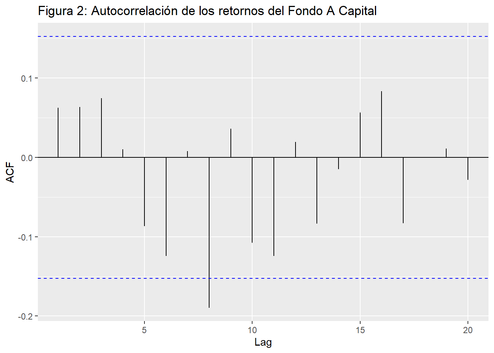
ggPacf(new_rets$A ,lag.max = 20) +
ggtitle(fn("Autocorrelación parcial de los retornos del Fondo A Capital"))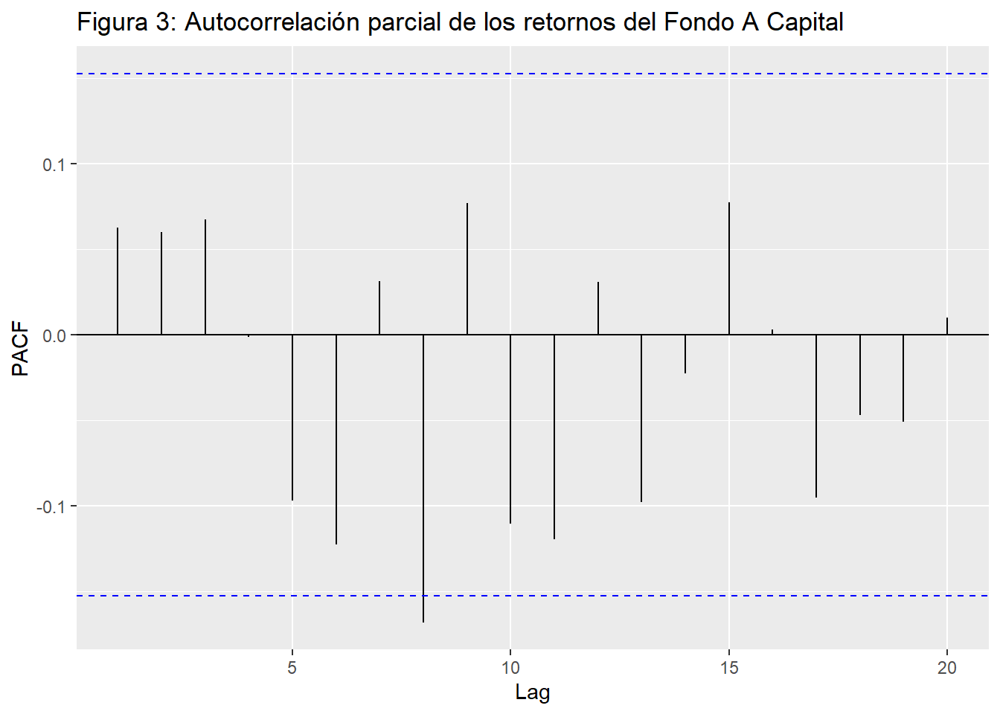
ggplot(retornos_capital_a, aes(x = log(A^2))) +
geom_histogram(aes(y = ..density..), colour = 1, fill = "white") +
geom_density()Warning: The dot-dot notation (`..density..`) was deprecated in ggplot2 3.4.0.
i Please use `after_stat(density)` instead.`stat_bin()` using `bins = 30`. Pick better value with `binwidth`.Warning: Removed 2 rows containing non-finite values (`stat_bin()`).Warning: Removed 2 rows containing non-finite values (`stat_density()`).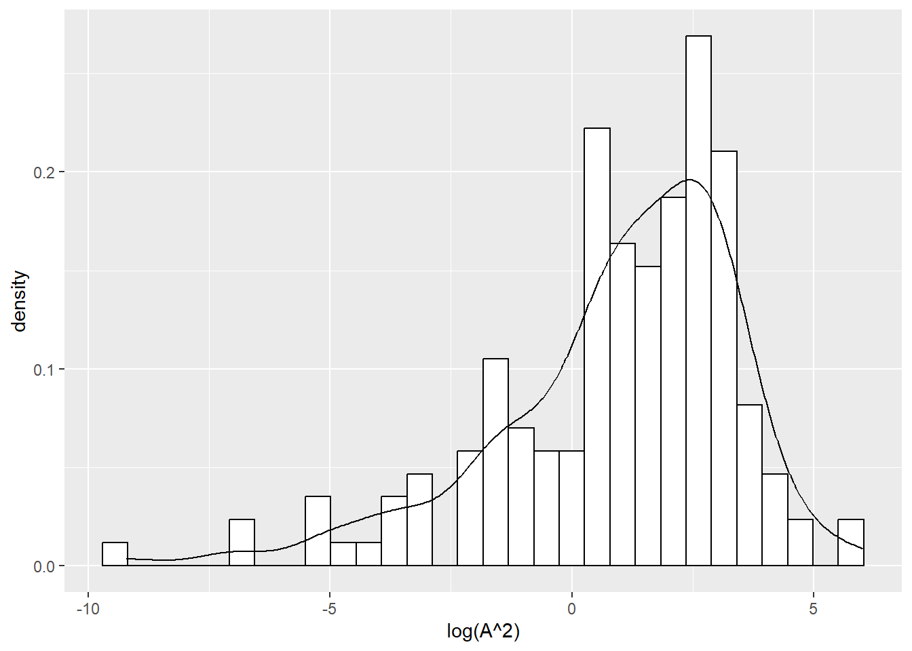
rets2 = new_rets$A^2
ggAcf(log(rets2))Warning: Removed 22 rows containing missing values (`geom_segment()`).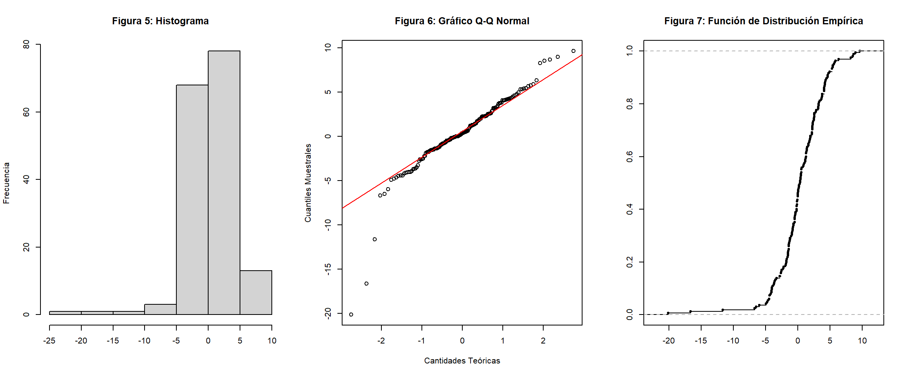
datos2 = rio::import("C:/Users/Diego/Desktop/proyecto_let0010_1/datos/30-11-2021_rentabilidad_afps.xlsx")
afps = unique(datos2$A.F.P.)paste("AFP", "A", "B", "C", "D", "E")[1] "AFP A B C D E"for (i in 1:length(afps)){
afp_temp = datos2 %>%
filter(A.F.P. == afps[i])
print(paste(afps[i], mean(afp_temp$A), mean(afp_temp$B), mean(afp_temp$C), mean(afp_temp$D), mean(afp_temp$E)))
}[1] "CAPITAL 0.400606060606061 0.353454545454545 0.319636363636364 0.247757575757576 0.224242424242424"
[1] "CUPRUM 0.453489583333333 0.401979166666667 0.365364583333333 0.286354166666667 0.232447916666667"
[1] "HABITAT 0.481145833333333 0.4384375 0.397447916666667 0.3140625 0.26140625"
[1] "MODELO 0.465147058823529 0.383676470588235 0.302794117647059 0.240220588235294 0.176029411764706"
[1] "PLANVITAL 0.45890625 0.403802083333333 0.34625 0.262395833333333 0.192552083333333"
[1] "PROVIDA 0.456302083333333 0.398020833333333 0.33859375 0.267760416666667 0.20453125"
[1] "UNO 0.675185185185185 0.455555555555556 0.08 -0.242962962962963 -0.504444444444444"
[1] "SISTEMA 0.4609375 0.41046875 0.362604166666667 0.28375 0.236822916666667"
[1] "BANSANDER 0.828518518518519 0.717407407407407 0.585925925925926 0.469259259259259 0.461851851851852"
[1] "SANTA MARIA 0.758148148148148 0.723333333333333 0.594074074074074 0.482962962962963 0.40037037037037"paste("AFP", "N Obs")[1] "AFP N Obs"for (i in 1:length(afps)){
afp_temp = datos2 %>%
filter(A.F.P. == afps[i])
print(paste(afps[i], nrow(afp_temp)))
}[1] "CAPITAL 165"
[1] "CUPRUM 192"
[1] "HABITAT 192"
[1] "MODELO 136"
[1] "PLANVITAL 192"
[1] "PROVIDA 192"
[1] "UNO 27"
[1] "SISTEMA 192"
[1] "BANSANDER 27"
[1] "SANTA MARIA 27"new_afps = subset(datos2, !(A.F.P. %in% c("UNO", "BANSANDER", "SANTA MARIA")))
afps_new = unique(new_afps$A.F.P.)
afps_new[1] "CAPITAL" "CUPRUM" "HABITAT" "MODELO" "PLANVITAL" "PROVIDA"
[7] "SISTEMA" paste("AFP", "A", "B", "C", "D", "E")[1] "AFP A B C D E"for (i in 1:length(afps_new)){
afp_temp = new_afps %>%
filter(A.F.P. == afps_new[i])
print(paste(afps_new[i], mean(afp_temp$A), mean(afp_temp$B), mean(afp_temp$C), mean(afp_temp$D), mean(afp_temp$E)))
}[1] "CAPITAL 0.400606060606061 0.353454545454545 0.319636363636364 0.247757575757576 0.224242424242424"
[1] "CUPRUM 0.453489583333333 0.401979166666667 0.365364583333333 0.286354166666667 0.232447916666667"
[1] "HABITAT 0.481145833333333 0.4384375 0.397447916666667 0.3140625 0.26140625"
[1] "MODELO 0.465147058823529 0.383676470588235 0.302794117647059 0.240220588235294 0.176029411764706"
[1] "PLANVITAL 0.45890625 0.403802083333333 0.34625 0.262395833333333 0.192552083333333"
[1] "PROVIDA 0.456302083333333 0.398020833333333 0.33859375 0.267760416666667 0.20453125"
[1] "SISTEMA 0.4609375 0.41046875 0.362604166666667 0.28375 0.236822916666667"new_afps$Mes = plyr::revalue(new_afps$Mes, c("Enero" = 1, "Febrero" = 2, "Marzo" = 3, "Abril" = 4, "Mayo" = 5, "Junio" = 6, "Julio" = 7, "Agosto" = 8, "Septiembre" = 9, "Octubre" = 10, "Noviembre" = 11, "Diciembre" = 12))
new_afps$Mes = as.numeric(new_afps$Mes)
new_afps$Año = as.numeric(new_afps$Año)
new_afps$t = new_afps$Año + (new_afps$Mes - 1)/12
new_afps_melt = melt(new_afps, id = c("A.F.P.", "Año", "Mes", "t"))
capital_long = filter(new_afps_melt, A.F.P. == "CAPITAL")
capital_wide = filter(new_afps, A.F.P. == "CAPITAL")ggplot(capital_long, aes(x = t, y = value)) +
geom_line(aes(color = variable, linetype = variable)) +
labs(title = fn(""))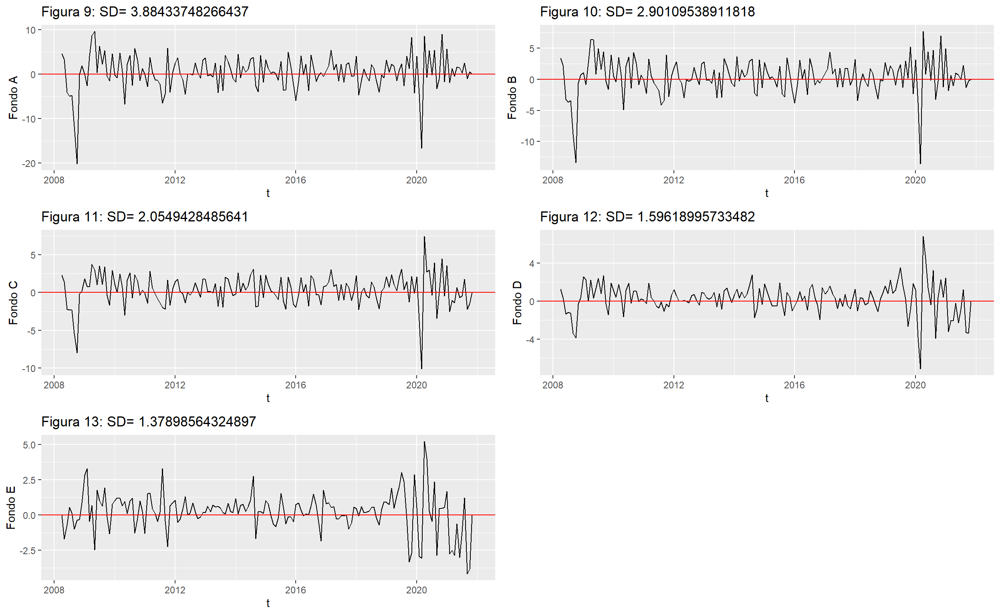
adding dummy grobs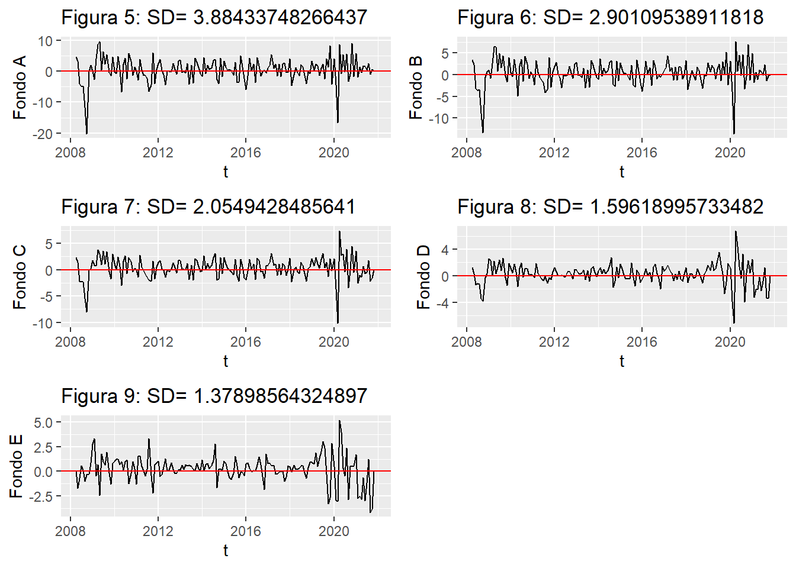
auto.arima(abs(capital_wide$A))Series: abs(capital_wide$A)
ARIMA(1,0,0) with non-zero mean
Coefficients:
ar1 mean
0.2492 2.7439
s.e. 0.0754 0.2772
sigma^2 = 7.262: log likelihood = -396.72
AIC=799.44 AICc=799.59 BIC=808.76acf(abs(capital_wide$A))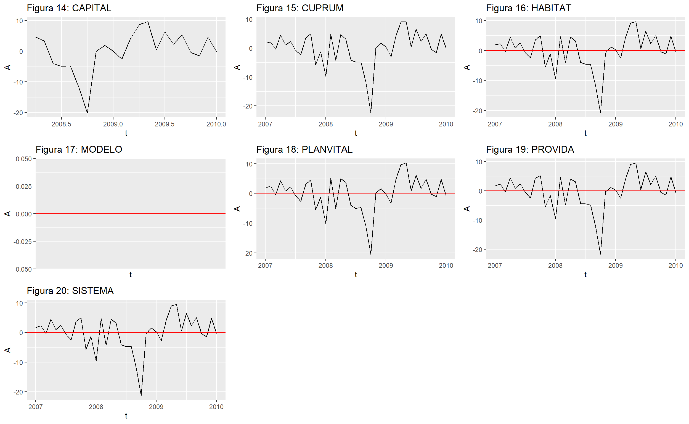
ggplot(capital_wide, aes(x = log(abs(A)))) +
geom_histogram(aes(y = ..density..), colour = 1, fill = "white") +
geom_density() +
labs(x = "Rentabilidad", y = "Densidad")`stat_bin()` using `bins = 30`. Pick better value with `binwidth`.Warning: Removed 2 rows containing non-finite values (`stat_bin()`).Warning: Removed 2 rows containing non-finite values (`stat_density()`).kurtosis(capital_wide$A)[1] 9.026759skewness(capital_wide$A)[1] -1.323489meses_positivos = data.frame(matrix(ncol = 7, nrow = 7))
for (i in 1:length(afps_new)){
afp_temp = new_afps %>%
filter(A.F.P. == afps_new[i])
meses_positivos[i, ] = c(afps_new[i], sum(afp_temp$A > 0), sum(afp_temp$B > 0), sum(afp_temp$C > 0), sum(afp_temp$D), sum(afp_temp$E > 0), nrow(afp_temp))
}
colnames(meses_positivos) = c("AFP", "A", "B", "C", "D", "E", "Meses_Totales")
meses_positivos AFP A B C D E Meses_Totales
1 CAPITAL 91 89 98 40.88 107 165
2 CUPRUM 109 111 116 54.98 128 192
3 HABITAT 109 109 115 60.3 132 192
4 MODELO 75 74 75 32.67 90 136
5 PLANVITAL 108 109 115 50.38 126 192
6 PROVIDA 107 108 117 51.41 127 192
7 SISTEMA 109 110 116 54.48 129 192meses_perc = meses_positivos %>%
mutate(A_Perc = as.numeric(A)/as.numeric(Meses_Totales),
B_Perc = as.numeric(B)/as.numeric(Meses_Totales),
C_Perc = as.numeric(C)/as.numeric(Meses_Totales),
D_Perc = as.numeric(D)/as.numeric(Meses_Totales),
E_Perc = as.numeric(E)/as.numeric(Meses_Totales))meses_perc[, c(1, 8:12)] AFP A_Perc B_Perc C_Perc D_Perc E_Perc
1 CAPITAL 0.5515152 0.5393939 0.5939394 0.2477576 0.6484848
2 CUPRUM 0.5677083 0.5781250 0.6041667 0.2863542 0.6666667
3 HABITAT 0.5677083 0.5677083 0.5989583 0.3140625 0.6875000
4 MODELO 0.5514706 0.5441176 0.5514706 0.2402206 0.6617647
5 PLANVITAL 0.5625000 0.5677083 0.5989583 0.2623958 0.6562500
6 PROVIDA 0.5572917 0.5625000 0.6093750 0.2677604 0.6614583
7 SISTEMA 0.5677083 0.5729167 0.6041667 0.2837500 0.6718750arr_temp = list()
for (i in 1:length(afps_new)){
afp_temp = new_afps %>%
filter(A.F.P. == afps_new[i]) %>%
filter(t >= 2007) %>%
filter(t <= 2010)
plot_temp = ggplot(afp_temp, aes(x = t)) + geom_line(aes(y = A)) + geom_hline(yintercept = 0, colour = "red") +
labs(title = fn(afps_new[i]))
arr_temp[[i]] = plot_temp
}
do.call(grid.arrange, arr_temp)arr_temp = list()
for (i in 1:length(afps_new)){
afp_temp = new_afps %>%
filter(A.F.P. == afps_new[i]) %>%
filter(t >= 2019) %>%
filter(t <= 2021)
plot_temp = ggplot(afp_temp, aes(x = t)) + geom_line(aes(y = A)) + geom_hline(yintercept = 0, colour = "red") +
labs(title = fn(afps_new[i]), y = "")
arr_temp[[i]] = plot_temp
}
do.call(grid.arrange, arr_temp) 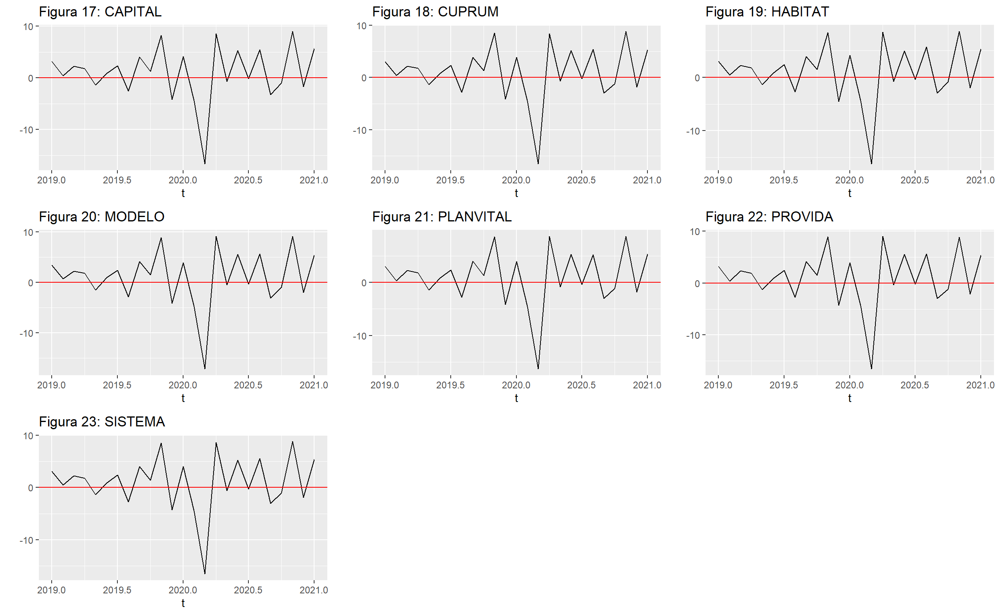
arr_temp = list()
for (i in 1:length(afps_new)){
afp_temp = new_afps %>%
filter(A.F.P. == afps_new[i]) %>%
filter(t >= 2020)
plot_temp = ggplot(afp_temp, aes(x = t)) + geom_line(aes(y = A)) + geom_hline(yintercept = 0, colour = "red") +
labs(title = fn(afps_new[i]), y = "")
arr_temp[[i]] = plot_temp
}
do.call(grid.arrange, arr_temp) 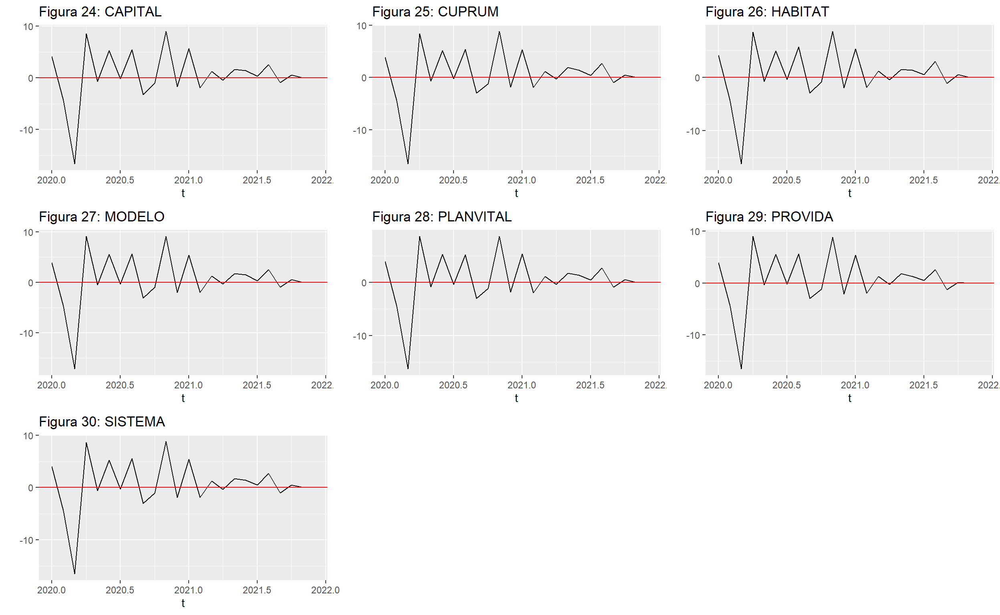
arr_temp = list()
for (i in 1:length(afps_new)){
afp_temp = new_afps %>%
filter(A.F.P. == afps_new[i]) %>%
filter(t >= 2007) %>%
filter(t <= 2010)
plot_temp = ggplot(afp_temp, aes(x = t)) + geom_line(aes(y = E)) + geom_hline(yintercept = 0, colour = "red") +
labs(title = fn(afps_new[i]), y = "")
arr_temp[[i]] = plot_temp
}
do.call(grid.arrange, arr_temp) 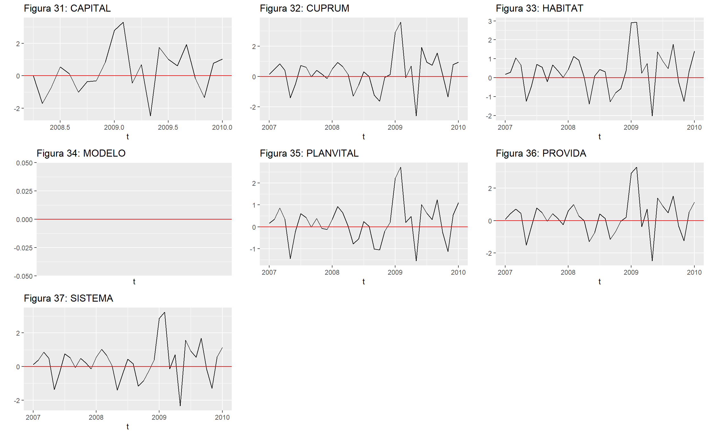
arr_temp = list()
for (i in 1:length(afps_new)){
afp_temp = new_afps %>%
filter(A.F.P. == afps_new[i]) %>%
filter(t >= 2019) %>%
filter(t <= 2021)
plot_temp = ggplot(afp_temp, aes(x = t)) + geom_line(aes(y = E)) + geom_hline(yintercept = 0, colour = "red") +
labs(title = fn(afps_new[i]))
arr_temp[[i]] = plot_temp
}
do.call(grid.arrange, arr_temp) 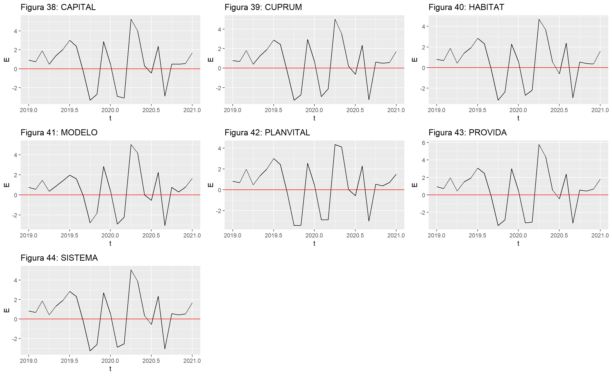
arr_temp = list()
for (i in 1:length(afps_new)){
afp_temp = new_afps %>%
filter(A.F.P. == afps_new[i]) %>%
filter(t >= 2020)
plot_temp = ggplot(afp_temp, aes(x = t)) + geom_line(aes(y = E)) + geom_hline(yintercept = 0, colour = "red") +
labs(title = fn(afps_new[i]), y = "")
arr_temp[[i]] = plot_temp
}
do.call(grid.arrange, arr_temp) 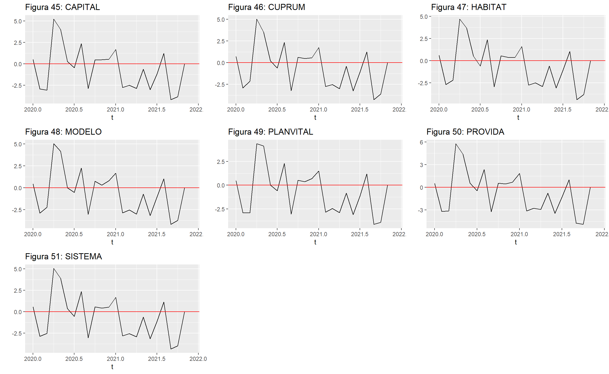
Luego de haber analizado los gráficos, podemos concluir que en su mayoría, las crisis internacionales afectan muy negativamente al fondo A, mientras que los sucesos que ocurren en nuestro país, no generan mucho efecto en sus rentabilidades, lo que es contrario al fondo E, que es muy reactivo a las tragedias nacionales, además podemos observar la gran diferencia de ganancias que hay entre ambos fondos, ya que a pesar de tener pérdidas exageradas, el fondo A siempre logra recuperarse, y los años que han resultado terribles para este, sin incluir la crisis financiera, simplemente lo han dejado sin ganancias, o con unas pérdidas que no superan al 5%, esto nos da información importante para decidir el nivel de riesgo a elegir en un fondo, ya que mientras superior sea el lapso de tiempo, mayor es la diferencia de rentabilidades que hay, y que a pesar de que las cosas no estén bien en el país, podemos seguir aumentando nuestro patrimonio.
Sobre los AFPs en particular, no es muy relevante cual, ya que las comisiones no son tan altas, y en fondos similares, la mayoría reportan cantidades de meses positivos similares, y ganancias relativamente parecidas, así que no son tan relevantes para nuestro caso.
Dando un último vistazo a los gráficos, ya que analizamos la correlación entre los dos fondos, esto se puede observar en la diferencia de variabilidad de los dos datos, ya que son gráficos parecidos, donde el fondo A tiene movimientos mucho más bruscos, y erráticos, mientras que el fondo E representa una versión mucho más pareja de la curva, con menos fluctuaciones.
[2] Rentabilidades
[3] Web-Scraping